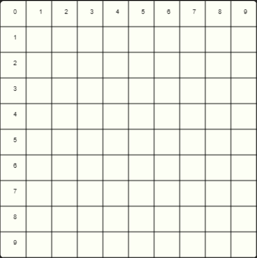

1
Сетка на холсте
среднеавтопроверка
С помощью canvas и циклов расчерти холст 400 × 400 на вертикальные и горизонтальные линии через каждые 40px и подпиши номера клеток.

Показать ответ (сначала попробуй сам!)
let canvas = document.querySelector('#canvas')
let ctx = canvas.getContext('2d')
let step = 40
for (let i = 1; i < 10; i++) {
ctx.beginPath()
ctx.moveTo(step * i, 0)
ctx.lineTo(step * i, 400)
ctx.stroke()
ctx.beginPath()
ctx.moveTo(0, step * i)
ctx.lineTo(400, step * i)
ctx.stroke()
}
for (let i = 0; i < 10; i++) {
ctx.fillText(i, step * i + 4, 12)
}